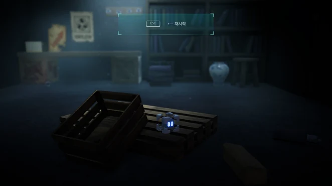
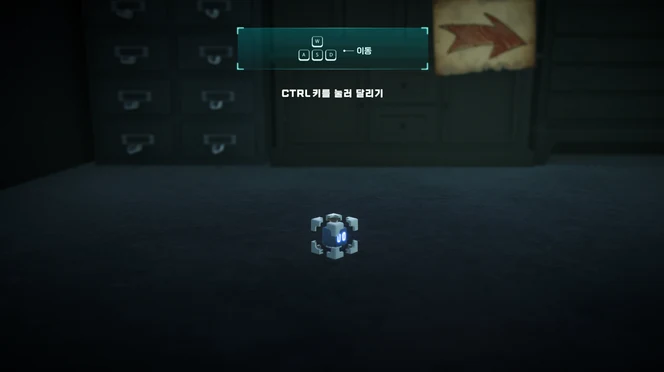
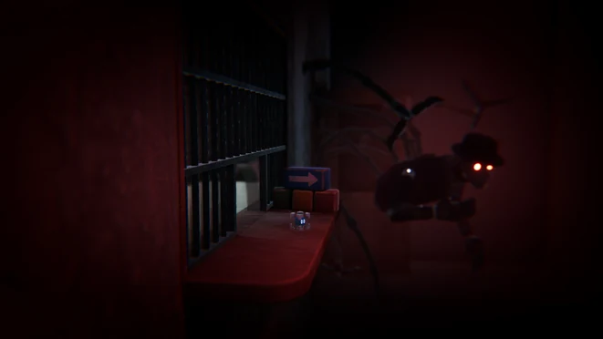
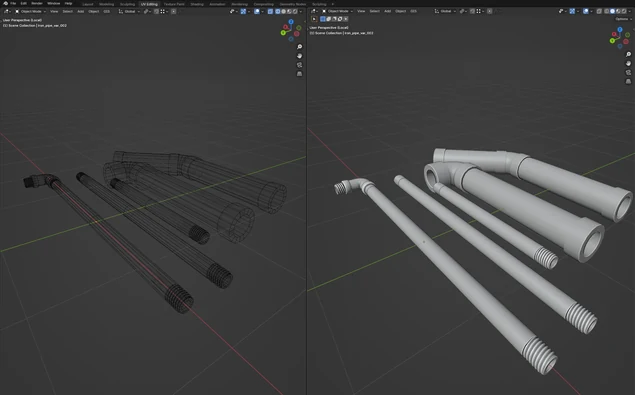
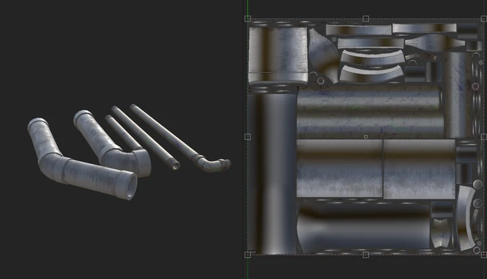
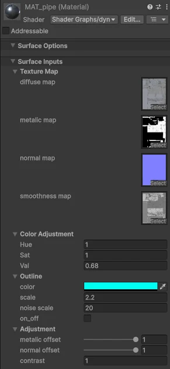

MAGGI / 환경 에셋
공포 어드벤처의 산업 시설을 구성하는 3D 에셋 제작과 Unity 적용.

01 / In-game scenes
산업 시설을 배경으로 한 게임 공간
공포 어드벤처 게임의 배경 에셋과 Unity 그래픽 구현을 담당했습니다.


02 / Asset production
모델링과 UV, 텍스처링
Blender에서 모델링과 UV를 작업하고 Substance 3D Painter에서 텍스처를 제작했습니다.


03 / Unity integration
Unity 머티리얼과 프리팹
커스텀 셰이더를 적용한 에셋을 Unity 프리팹으로 제작했습니다.

ROLE & CREDITS
담당 작업
3D 모델링, 텍스처링, 애니메이션, Unity 그래픽 구현. 인게임 화면은 팀 공동 작업입니다.